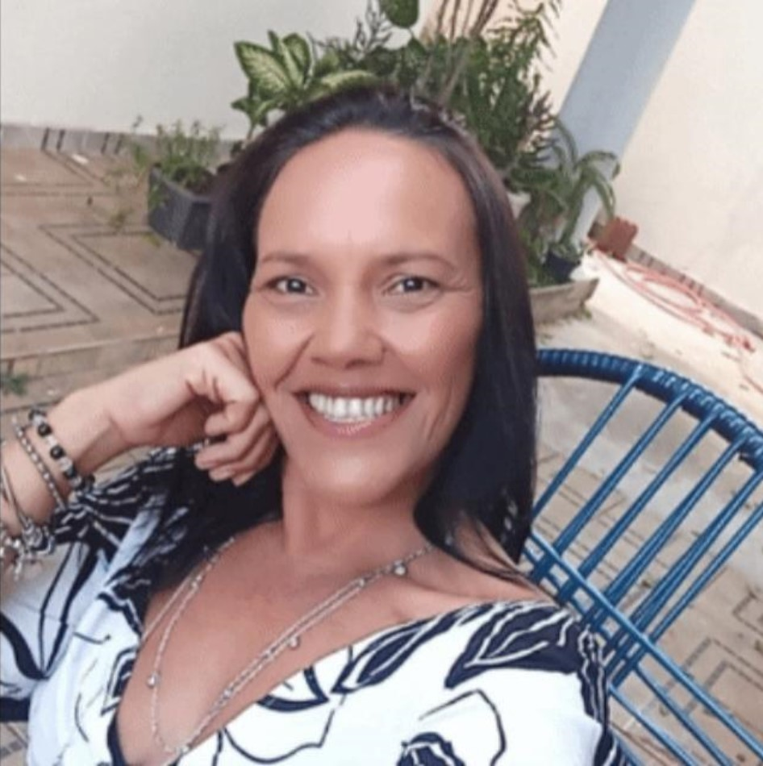
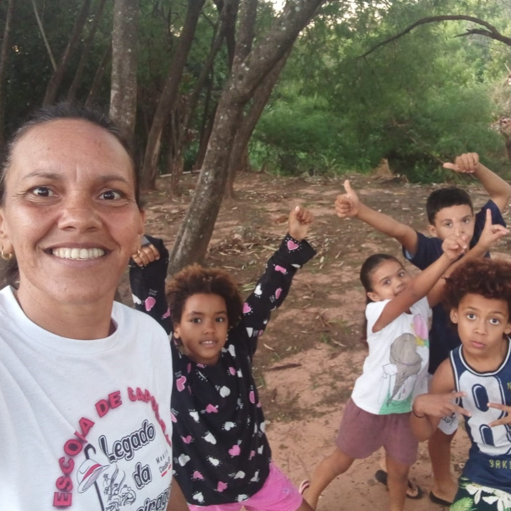
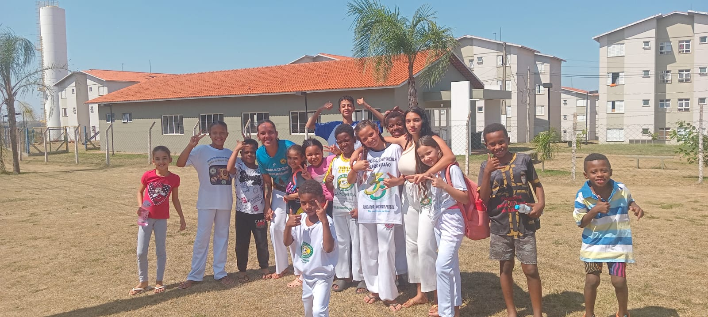
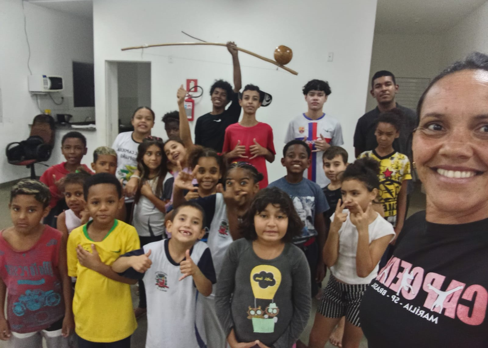
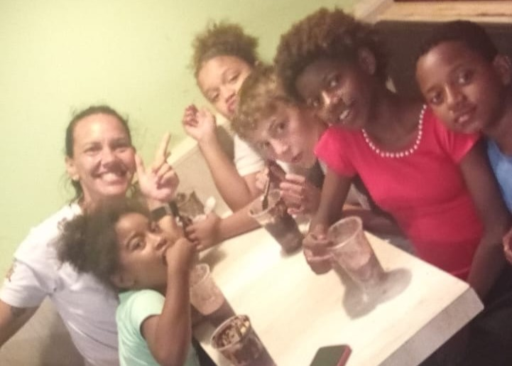

Sobre o projeto
Afeto, cultura e cidadania
O coletivo atua em praças, espaços parceiros e residências das famílias, promovendo ações práticas, educativas e culturais que constroem vínculos e transformam realidades.
Continue lendo →Rede de acolhimento e reeducação emocional
Desde 2016, o Coletivo de Mulheres Estrela Dalva cria redes de afeto, promove oficinas culturais e oferece apoio a famílias invisibilizadas e vulneráveis.
+80 famílias acolhidas
+1.000 oficinas gratuitas
Atuação diária
Sobre o projeto
O coletivo atua em praças, espaços parceiros e residências das famílias, promovendo ações práticas, educativas e culturais que constroem vínculos e transformam realidades.
Continue lendo →Idealizadora
Educadora oficineira, atleta social e fundadora do Coletivo de Mulheres Estrela Dalva. Mariana conduz processos de fortalecimento comunitário junto às mães, crianças e adolescentes.
Conheça a Mariana →Galeria
Oficinas de capoeira, musicalidade e samba de roda, leitura e escrita, ECA, debates reflexivos, rodas de conversa, organização de eventos culturais e muito mais!
Veja alguns momentos especiais.
Sobre o projeto
O Coletivo de Mulheres Estrela Dalva é um projeto sociocultural independente que atua no acolhimento de mulheres e crianças vítimas de violência doméstica, promovendo a reeducação emocional, afetiva e cidadã.
Criado em 2016, o coletivo nasceu como resposta às urgências de um território invisibilizado e vulnerável. Desde então, desenvolvemos ações de fortalecimento de vínculos familiares e comunitários, ajudando famílias a reconstruírem trajetórias, acessarem direitos e recuperarem o brilho da esperança.
O projeto acontece de maneira descentralizada: em praças, espaços parceiros e nas casas das próprias famílias. Ainda assim, permanecemos firmes, construindo redes de afeto e transformação em cada canto que conseguimos chegar.
“Trazer as mães para junto das crianças é trazer cura, proteção e força para a comunidade como um todo.”
Famílias acolhidas desde 2016.
Oficinas gratuitas realizadas.
Atuação com crianças (seg/qua), mulheres (sex/sáb) e famílias sob demanda.
Alimentos, roupas, escuta ativa e apoio emergencial para mães, crianças e jovens.
Idealizadora
Educadora oficineira, fundadora do coletivo e atleta social. Sua atuação une cultura e formação cidadã e humanista.
Mariana mantém viva a chama da esperança, mesmo diante da falta de estrutura física. Cada oficina conduzida é também um espaço de escuta ativa e construção de novas perspectivas.


Galeria



Depoimentos
“Participo das oficinas desde 2018. Aqui me encontrei como mãe e mulher. Aprendi a me ouvir e a construir um lar com diálogo e respeito.”
Mãe participante“O coletivo abriu portas para meus filhos experimentarem arte e cultura. Hoje eles se sentem parte de uma família maior.”
Mãe de participantes“Como voluntária, aprendo diariamente sobre cuidado e redes solidárias. É uma escola de humanidade.”
VoluntáriaComo apoiar
Contato
Entre em contato para saber mais, nos apoiar ou se voluntariar!